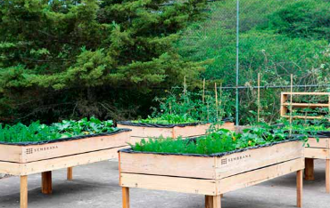
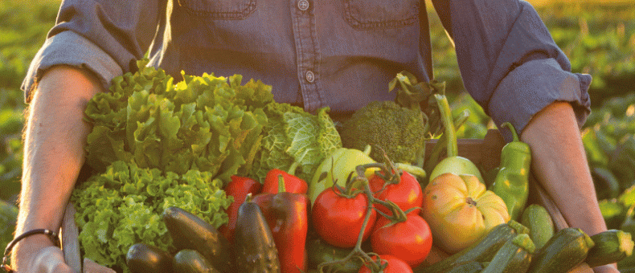
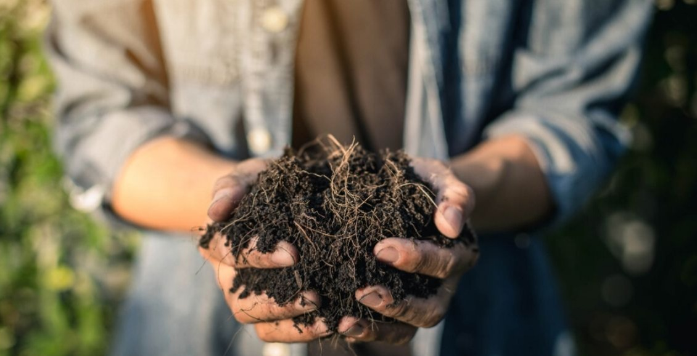
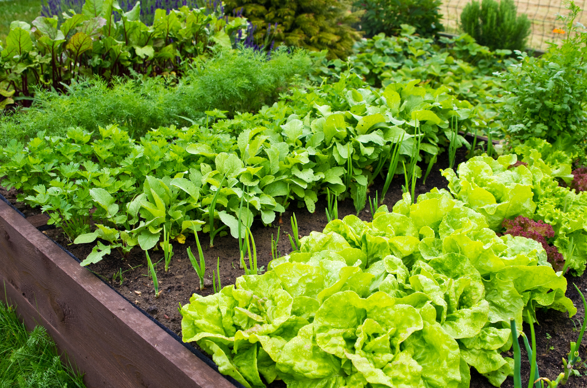
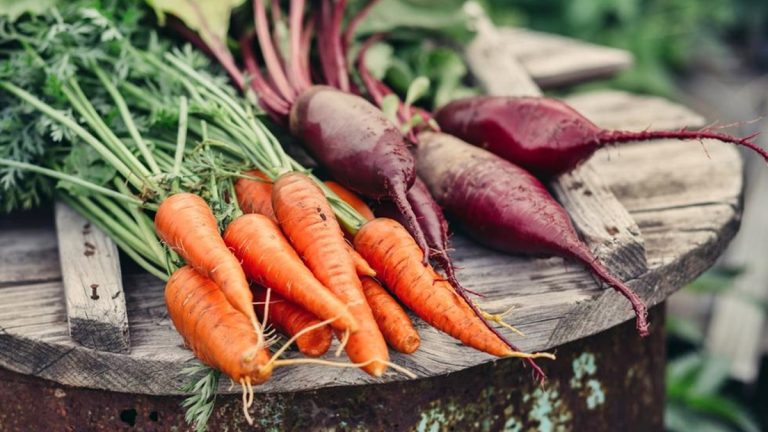

Nuestra Historia
En Huerto Verde, nuestro viaje comenzó hace más de una década, cuando un grupo de amigos con una pasión
compartida por la agricultura sostenible decidió convertir una pequeña parcela de tierra en un oasis
verde. Lo que comenzó como un modesto proyecto se ha convertido en un próspero huerto orgánico que
abastece a nuestra comunidad con productos frescos y saludables.

Misión y Visión
En Huerto Verde, estamos comprometidos con la producción de alimentos saludables y sostenibles,
cultivados de manera responsable y respetuosa con el medio ambiente. Nuestra visión es crear un mundo
donde todos tengan acceso a alimentos nutritivos y de calidad, mientras protegemos y preservamos
nuestros recursos naturales para las generaciones futuras.

Nuestros Valores
En Huerto Verde, nos regimos por valores fundamentales que guían todas nuestras acciones y decisiones:
Integridad: Nos comprometemos a actuar con honestidad y transparencia en todo lo que hacemos.
Calidad: Nos esforzamos por ofrecer productos de la más alta calidad, cultivados con cuidado y atención al detalle.
Sostenibilidad: Nos comprometemos a proteger y preservar el medio ambiente mediante prácticas agrícolas sostenibles y respetuosas con la naturaleza.
Comunidad: Nos dedicamos a servir a nuestra comunidad, promoviendo la salud y el bienestar a través de
alimentos frescos y nutritivos.

Nuestro Equipo
En Huerto Verde, contamos con un equipo apasionado y dedicado de agricultores, agrónomos, y
especialistas en sostenibilidad ambiental. Nuestro equipo trabaja incansablemente para garantizar la
calidad y seguridad de nuestros productos, mientras cuida y protege el entorno natural en el que
operamos.

Compromiso Social y Ambiental
En Huerto Verde, estamos comprometidos con el bienestar de nuestra comunidad y el medio ambiente.
Colaboramos con organizaciones locales para promover la educación ambiental y la seguridad alimentaria,
y estamos orgullosos de participar en programas de donación de alimentos para aquellos que más lo
necesitan.
Certificaciones y Reconocimientos
Huerto Verde cuenta con certificaciones orgánicas reconocidas internacionalmente, que garantizan la
calidad y pureza de nuestros productos. Además, hemos sido reconocidos por nuestro compromiso con la
sostenibilidad y la responsabilidad social empresarial.